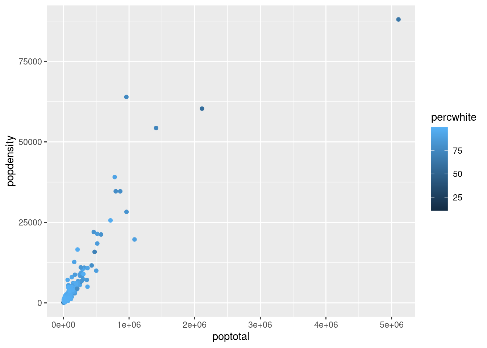
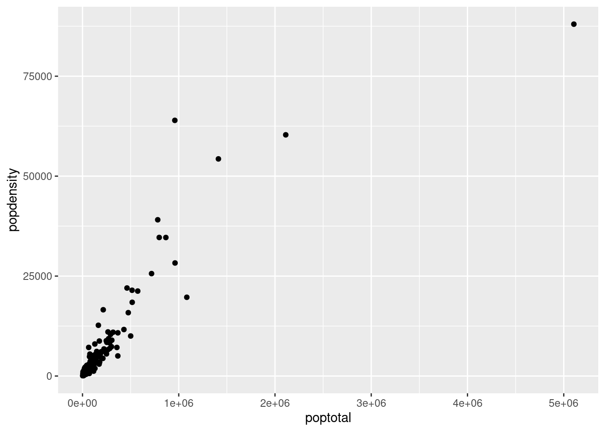

library(tidyverse)Intro to Coding Principles
Setup
Variables
Definition
So what even is a variable, in the first place? There are many possible definitions:
- Anything you assign!
- Practically speaking, variables are a way for you to store data without having to type it out every time.
- They allow you to manipulate data with the help of pre-built functions (more on that later).
- They can also be changed - hence the name “variable”.
What are some examples of variables?
- The simplest is a single value - like in math. I could say “x = 10”.
- It might also be a vector - essentially a list of values. For example, I might just store every name in this class in a vector.
- Most frequently, your variables will be your entire data frames.
Assignment & Saving
Ok, these seem pretty useful - so how do we use them? In math and most programming languages, you use the “=” operator. This is also possible to do in R:
x = 10
x[1] 10However, in R, we prefer to use the “<-” operator, to avoid confusion between variable assignment and function arguments. Here’s how that looks:
y <- 15
y[1] 15Saving Changes
Suppose you run a function on a variable. By default, R will show you the output of this function, but it will not actually modify your variable. For example, let’s look at the midwest data set:
midwest# A tibble: 437 × 28
PID county state area poptotal popdensity popwhite popblack popamerindian
<int> <chr> <chr> <dbl> <int> <dbl> <int> <int> <int>
1 561 ADAMS IL 0.052 66090 1271. 63917 1702 98
2 562 ALEXAN… IL 0.014 10626 759 7054 3496 19
3 563 BOND IL 0.022 14991 681. 14477 429 35
4 564 BOONE IL 0.017 30806 1812. 29344 127 46
5 565 BROWN IL 0.018 5836 324. 5264 547 14
6 566 BUREAU IL 0.05 35688 714. 35157 50 65
7 567 CALHOUN IL 0.017 5322 313. 5298 1 8
8 568 CARROLL IL 0.027 16805 622. 16519 111 30
9 569 CASS IL 0.024 13437 560. 13384 16 8
10 570 CHAMPA… IL 0.058 173025 2983. 146506 16559 331
# ℹ 427 more rows
# ℹ 19 more variables: popasian <int>, popother <int>, percwhite <dbl>,
# percblack <dbl>, percamerindan <dbl>, percasian <dbl>, percother <dbl>,
# popadults <int>, perchsd <dbl>, percollege <dbl>, percprof <dbl>,
# poppovertyknown <int>, percpovertyknown <dbl>, percbelowpoverty <dbl>,
# percchildbelowpovert <dbl>, percadultpoverty <dbl>,
# percelderlypoverty <dbl>, inmetro <int>, category <chr>Now, let’s run a function that “changes” the data frame. We can use select() to look only at the county column:
midwest |>
select(county)# A tibble: 437 × 1
county
<chr>
1 ADAMS
2 ALEXANDER
3 BOND
4 BOONE
5 BROWN
6 BUREAU
7 CALHOUN
8 CARROLL
9 CASS
10 CHAMPAIGN
# ℹ 427 more rowsCool change! So, just to make sure, let’s look at the midwest data frame one more time.
midwest# A tibble: 437 × 28
PID county state area poptotal popdensity popwhite popblack popamerindian
<int> <chr> <chr> <dbl> <int> <dbl> <int> <int> <int>
1 561 ADAMS IL 0.052 66090 1271. 63917 1702 98
2 562 ALEXAN… IL 0.014 10626 759 7054 3496 19
3 563 BOND IL 0.022 14991 681. 14477 429 35
4 564 BOONE IL 0.017 30806 1812. 29344 127 46
5 565 BROWN IL 0.018 5836 324. 5264 547 14
6 566 BUREAU IL 0.05 35688 714. 35157 50 65
7 567 CALHOUN IL 0.017 5322 313. 5298 1 8
8 568 CARROLL IL 0.027 16805 622. 16519 111 30
9 569 CASS IL 0.024 13437 560. 13384 16 8
10 570 CHAMPA… IL 0.058 173025 2983. 146506 16559 331
# ℹ 427 more rows
# ℹ 19 more variables: popasian <int>, popother <int>, percwhite <dbl>,
# percblack <dbl>, percamerindan <dbl>, percasian <dbl>, percother <dbl>,
# popadults <int>, perchsd <dbl>, percollege <dbl>, percprof <dbl>,
# poppovertyknown <int>, percpovertyknown <dbl>, percbelowpoverty <dbl>,
# percchildbelowpovert <dbl>, percadultpoverty <dbl>,
# percelderlypoverty <dbl>, inmetro <int>, category <chr>Now wait a minute - what happened here? I clearly told it to select the county column, and it did! So why is it that, when I went to look at the midwest data frame again, it had all of the columns, not just the one that I selected?
The answer is that we never saved midwest back to a variable! By default, R will show the output, but not modify the data frame unless I want it to. Let’s look at a couple ways we can do that:
midwest <- midwest |>
select(county)
midwest# A tibble: 437 × 1
county
<chr>
1 ADAMS
2 ALEXANDER
3 BOND
4 BOONE
5 BROWN
6 BUREAU
7 CALHOUN
8 CARROLL
9 CASS
10 CHAMPAIGN
# ℹ 427 more rowsThe first option is to simply overwrite the variable. This is useful if you’re never going to need those data in their original form - it saves you some confusion in that case.
However, what if later on I decide I did need those data after all? Perhaps I wanted population density data. I go to try and find this variable in the midwest data set, because that’s where I know it’s stored…
midwest |>
select(popdensity)Error in `select()`:
! Can't select columns that don't exist.
✖ Column `popdensity` doesn't exist.…but the variable is gone! This is a common point of confusion for students in STA 199, so it’s important to understand what you’re doing whenever you modify your data in-place like this - you’re overwriting the existing data.
We have a couple of options here. If we were loading these data from a .csv file, we could go back to the top of the document. Or, we could do something more effective: Go to Environment, click the little broom icon, and select “yes”.
midwest# A tibble: 437 × 28
PID county state area poptotal popdensity popwhite popblack popamerindian
<int> <chr> <chr> <dbl> <int> <dbl> <int> <int> <int>
1 561 ADAMS IL 0.052 66090 1271. 63917 1702 98
2 562 ALEXAN… IL 0.014 10626 759 7054 3496 19
3 563 BOND IL 0.022 14991 681. 14477 429 35
4 564 BOONE IL 0.017 30806 1812. 29344 127 46
5 565 BROWN IL 0.018 5836 324. 5264 547 14
6 566 BUREAU IL 0.05 35688 714. 35157 50 65
7 567 CALHOUN IL 0.017 5322 313. 5298 1 8
8 568 CARROLL IL 0.027 16805 622. 16519 111 30
9 569 CASS IL 0.024 13437 560. 13384 16 8
10 570 CHAMPA… IL 0.058 173025 2983. 146506 16559 331
# ℹ 427 more rows
# ℹ 19 more variables: popasian <int>, popother <int>, percwhite <dbl>,
# percblack <dbl>, percamerindan <dbl>, percasian <dbl>, percother <dbl>,
# popadults <int>, perchsd <dbl>, percollege <dbl>, percprof <dbl>,
# poppovertyknown <int>, percpovertyknown <dbl>, percbelowpoverty <dbl>,
# percchildbelowpovert <dbl>, percadultpoverty <dbl>,
# percelderlypoverty <dbl>, inmetro <int>, category <chr>Now the second option: let’s try making the modification a little more carefully: saving the data to a new variable.
midwest_counties <- midwest |>
select(county)
midwest_counties# A tibble: 437 × 1
county
<chr>
1 ADAMS
2 ALEXANDER
3 BOND
4 BOONE
5 BROWN
6 BUREAU
7 CALHOUN
8 CARROLL
9 CASS
10 CHAMPAIGN
# ℹ 427 more rowsmidwest# A tibble: 437 × 28
PID county state area poptotal popdensity popwhite popblack popamerindian
<int> <chr> <chr> <dbl> <int> <dbl> <int> <int> <int>
1 561 ADAMS IL 0.052 66090 1271. 63917 1702 98
2 562 ALEXAN… IL 0.014 10626 759 7054 3496 19
3 563 BOND IL 0.022 14991 681. 14477 429 35
4 564 BOONE IL 0.017 30806 1812. 29344 127 46
5 565 BROWN IL 0.018 5836 324. 5264 547 14
6 566 BUREAU IL 0.05 35688 714. 35157 50 65
7 567 CALHOUN IL 0.017 5322 313. 5298 1 8
8 568 CARROLL IL 0.027 16805 622. 16519 111 30
9 569 CASS IL 0.024 13437 560. 13384 16 8
10 570 CHAMPA… IL 0.058 173025 2983. 146506 16559 331
# ℹ 427 more rows
# ℹ 19 more variables: popasian <int>, popother <int>, percwhite <dbl>,
# percblack <dbl>, percamerindan <dbl>, percasian <dbl>, percother <dbl>,
# popadults <int>, perchsd <dbl>, percollege <dbl>, percprof <dbl>,
# poppovertyknown <int>, percpovertyknown <dbl>, percbelowpoverty <dbl>,
# percchildbelowpovert <dbl>, percadultpoverty <dbl>,
# percelderlypoverty <dbl>, inmetro <int>, category <chr>Now we have two data frames: the new data frame midwest_counties, which contains our modifications from the data pipeline above, and the original data frame midwest, which has not been changed. Both of these are useful operations, and you will undoubtedly use both this semester! However, keep this distinction in mind when you’re mutating your data - don’t remove anything you think you’ll need later.
Variable Examples
x <- 10
x[1] 10y <- c(3, 5)
y[1] 3 5z <- midwest
z# A tibble: 437 × 28
PID county state area poptotal popdensity popwhite popblack popamerindian
<int> <chr> <chr> <dbl> <int> <dbl> <int> <int> <int>
1 561 ADAMS IL 0.052 66090 1271. 63917 1702 98
2 562 ALEXAN… IL 0.014 10626 759 7054 3496 19
3 563 BOND IL 0.022 14991 681. 14477 429 35
4 564 BOONE IL 0.017 30806 1812. 29344 127 46
5 565 BROWN IL 0.018 5836 324. 5264 547 14
6 566 BUREAU IL 0.05 35688 714. 35157 50 65
7 567 CALHOUN IL 0.017 5322 313. 5298 1 8
8 568 CARROLL IL 0.027 16805 622. 16519 111 30
9 569 CASS IL 0.024 13437 560. 13384 16 8
10 570 CHAMPA… IL 0.058 173025 2983. 146506 16559 331
# ℹ 427 more rows
# ℹ 19 more variables: popasian <int>, popother <int>, percwhite <dbl>,
# percblack <dbl>, percamerindan <dbl>, percasian <dbl>, percother <dbl>,
# popadults <int>, perchsd <dbl>, percollege <dbl>, percprof <dbl>,
# poppovertyknown <int>, percpovertyknown <dbl>, percbelowpoverty <dbl>,
# percchildbelowpovert <dbl>, percadultpoverty <dbl>,
# percelderlypoverty <dbl>, inmetro <int>, category <chr>Data Types
Examples
Every column in a data frame will have a particular data type - sort of a way that R recognizes, classifies, and interacts with the data. Let’s look at an example, using the convenient glimpse function:
glimpse(midwest)Rows: 437
Columns: 28
$ PID <int> 561, 562, 563, 564, 565, 566, 567, 568, 569, 570,…
$ county <chr> "ADAMS", "ALEXANDER", "BOND", "BOONE", "BROWN", "…
$ state <chr> "IL", "IL", "IL", "IL", "IL", "IL", "IL", "IL", "…
$ area <dbl> 0.052, 0.014, 0.022, 0.017, 0.018, 0.050, 0.017, …
$ poptotal <int> 66090, 10626, 14991, 30806, 5836, 35688, 5322, 16…
$ popdensity <dbl> 1270.9615, 759.0000, 681.4091, 1812.1176, 324.222…
$ popwhite <int> 63917, 7054, 14477, 29344, 5264, 35157, 5298, 165…
$ popblack <int> 1702, 3496, 429, 127, 547, 50, 1, 111, 16, 16559,…
$ popamerindian <int> 98, 19, 35, 46, 14, 65, 8, 30, 8, 331, 51, 26, 17…
$ popasian <int> 249, 48, 16, 150, 5, 195, 15, 61, 23, 8033, 89, 3…
$ popother <int> 124, 9, 34, 1139, 6, 221, 0, 84, 6, 1596, 20, 7, …
$ percwhite <dbl> 96.71206, 66.38434, 96.57128, 95.25417, 90.19877,…
$ percblack <dbl> 2.57527614, 32.90043290, 2.86171703, 0.41225735, …
$ percamerindan <dbl> 0.14828264, 0.17880670, 0.23347342, 0.14932156, 0…
$ percasian <dbl> 0.37675897, 0.45172219, 0.10673071, 0.48691813, 0…
$ percother <dbl> 0.18762294, 0.08469791, 0.22680275, 3.69733169, 0…
$ popadults <int> 43298, 6724, 9669, 19272, 3979, 23444, 3583, 1132…
$ perchsd <dbl> 75.10740, 59.72635, 69.33499, 75.47219, 68.86152,…
$ percollege <dbl> 19.63139, 11.24331, 17.03382, 17.27895, 14.47600,…
$ percprof <dbl> 4.355859, 2.870315, 4.488572, 4.197800, 3.367680,…
$ poppovertyknown <int> 63628, 10529, 14235, 30337, 4815, 35107, 5241, 16…
$ percpovertyknown <dbl> 96.27478, 99.08714, 94.95697, 98.47757, 82.50514,…
$ percbelowpoverty <dbl> 13.151443, 32.244278, 12.068844, 7.209019, 13.520…
$ percchildbelowpovert <dbl> 18.011717, 45.826514, 14.036061, 11.179536, 13.02…
$ percadultpoverty <dbl> 11.009776, 27.385647, 10.852090, 5.536013, 11.143…
$ percelderlypoverty <dbl> 12.443812, 25.228976, 12.697410, 6.217047, 19.200…
$ inmetro <int> 0, 0, 0, 1, 0, 0, 0, 0, 0, 1, 0, 0, 0, 1, 0, 1, 0…
$ category <chr> "AAR", "LHR", "AAR", "ALU", "AAR", "AAR", "LAR", …Next to the data, we can see various designations - <int>, <dbl>, <chr>, etc. These are data types. But what exactly is the difference?
Double/Numeric
The dbl data type, which is the default implementation of the numeric class, stands for double - meaning “double-precision floating-point format”. It’s pretty clear that double is an easier word to remember! This allows you to store numbers with a lot of decimal points (but not infinite!). For example, let’s look at \(\pi\), which is built in as pi in R:
pi[1] 3.141593class(pi)[1] "numeric"Here, we use the class() function to determine what data type R is using to store our variables. In this case, we can see that R stores pi as a default numeric variable, which is implemented as a double. In general, whenever you work with numbers, they will be doubles, and for purposes of STA 199 there is no issue with this.
Integer
The int data type means integer - as in, the mathematical concept of an integer. All data represented as integers will be whole numbers. This data type is not capable of storing decimal places, so if you try to do decimal operations with it, R will implicitly cast it to another data type. Implicitly means that it does this without us telling it to. Let’s take a look at a couple of examples:
a <- 3
class(a)[1] "numeric"By default, R will treat all numbers as the numeric class. If you want to explicitly tell R that your number is an integer, follow the number with “L”:
a <- 3L
class(a)[1] "integer"Now, let’s say we want to divide this number by 2:
b <- a / 2
class(b)[1] "numeric"Since 3 is not divisible by 2, the output is a decimal. However, since we have performed a decimal operation, rather than trying to guess whether to round up or down, R simply implicitly casts it back to numeric.
Logical/Boolean
While there isn’t an example in this data frame, there is a data type called logical - which represents true/false.
c <- TRUE
class(c)[1] "logical"In R, you need to type out TRUE/FALSE in all caps for it to be recognized. Under the hood, R stores these values as “FALSE = 0” and “TRUE = 1”, which means that if you want to find the percentage of TRUE in your data, you can just take the average:
d <- c(TRUE, FALSE, TRUE)
mean(d)[1] 0.6666667Character/String
The chr data type represents all characters and strings in R. Unlike some languages, R does not differentiate between these. In general, strings are used to represent words and categorical data, for example:
place <- "Durham, NC"
class(place)[1] "character"However, there is an important point of caution here. Sometimes, when you load in a data frame, there will be columns that should be represented as numbers, but are accidentally represented as strings. If you’re not careful, this can have consequences. For example, consider the following:
0 == 00[1] TRUE"0" == "00"[1] FALSEIn R, the numbers 0 and 00 represent the same thing! However, when they are strings, they do not. R treats numbers differently than it does strings, so it’s important to pay attention to which one you are actually implementing. You might also run into issues with some of your operations - for example, if you try to take the average of a column of strings, R has no idea what to do and will throw an error.
Note: pay attention to the usage of two equal signs here, rather than just one. Why did we do this? (More on this shortly.)
Casting
So what is the solution to this problem? The answer is called casting, which means changing the data type. You do this using the as.character(), as.numeric(), and as.logical() commands. Let’s look at an example:
e <- "00"
class(e)[1] "character"e[1] "00"e <- as.numeric(e)
class(e)[1] "numeric"e[1] 0e <- as.logical(e)
class(e)[1] "logical"e[1] FALSEe <- as.character(e)
class(e)[1] "character"e[1] "FALSE"e <- as.numeric(e) # What happened?Warning: NAs introduced by coercione[1] NABe mindful with your casting - you can lose information along the way!
Note: NA is a specific type in R. It essentially means “nothing” or “this value has not been declared”. You cannot use == to check whether a value is NA. Instead, you must use is.na().
Boolean Operators
So what is going on with the whole == thing, anyway? Well, == is one of four so-called Boolean or Logical Operators - a term we get from computer science. The term basically means “anything that relies on multiple statements.” Note that there is a difference between Boolean operators and Boolean (True/False) values - they are actually two entirely different things!
Equals
The first Boolean operator is “equals”. This is a place where it is easy to get confused. We use the single equals sign, =, to denote assignment - essentially, telling R “this thing takes this value.” We use the double equals sign, ==, to denote comparison - essentially, asking R “are these two values equal?” It is important to keep these two things distinct - if you want to check equality, or filter for a specific value, you always need to use the double equals sign!
midwest |>
filter(county = "Cook")Error in `filter()`:
! We detected a named input.
ℹ This usually means that you've used `=` instead of `==`.
ℹ Did you mean `county == "Cook"`?Here’s an example of where a single equals sign is incorrect, and R returns an error. Fortunately, it has a very helpful suggestion in the error message! Let’s replace that with the double equals:
midwest |>
filter(county == "Cook")# A tibble: 0 × 28
# ℹ 28 variables: PID <int>, county <chr>, state <chr>, area <dbl>,
# poptotal <int>, popdensity <dbl>, popwhite <int>, popblack <int>,
# popamerindian <int>, popasian <int>, popother <int>, percwhite <dbl>,
# percblack <dbl>, percamerindan <dbl>, percasian <dbl>, percother <dbl>,
# popadults <int>, perchsd <dbl>, percollege <dbl>, percprof <dbl>,
# poppovertyknown <int>, percpovertyknown <dbl>, percbelowpoverty <dbl>,
# percchildbelowpovert <dbl>, percadultpoverty <dbl>, …Now there’s no error message, but we also didn’t return any values. Why did this happen? When I use ==, I am checking whether these two strings are exactly equivalent, and that includes being case sensitive. If I view the data in the data frame, I see that all of the county names are actually in all caps. I can fix the string in my example…
midwest |>
filter(county == "COOK")# A tibble: 1 × 28
PID county state area poptotal popdensity popwhite popblack popamerindian
<int> <chr> <chr> <dbl> <int> <dbl> <int> <int> <int>
1 576 COOK IL 0.058 5105067 88018. 3204947 1317147 10289
# ℹ 19 more variables: popasian <int>, popother <int>, percwhite <dbl>,
# percblack <dbl>, percamerindan <dbl>, percasian <dbl>, percother <dbl>,
# popadults <int>, perchsd <dbl>, percollege <dbl>, percprof <dbl>,
# poppovertyknown <int>, percpovertyknown <dbl>, percbelowpoverty <dbl>,
# percchildbelowpovert <dbl>, percadultpoverty <dbl>,
# percelderlypoverty <dbl>, inmetro <int>, category <chr>…and finally find Chicago!
And
The second Boolean operator is “and”. We use this when we want multiple conditions to be true. In R, to denote and, we use the single ampersand & (in some other languages, you use a double ampersand). When R sees this, it checks both statements, and only returns TRUE if both statements are true. Let’s look at an example, again using filter():
midwest |>
filter(state == "IL")# A tibble: 102 × 28
PID county state area poptotal popdensity popwhite popblack popamerindian
<int> <chr> <chr> <dbl> <int> <dbl> <int> <int> <int>
1 561 ADAMS IL 0.052 66090 1271. 63917 1702 98
2 562 ALEXAN… IL 0.014 10626 759 7054 3496 19
3 563 BOND IL 0.022 14991 681. 14477 429 35
4 564 BOONE IL 0.017 30806 1812. 29344 127 46
5 565 BROWN IL 0.018 5836 324. 5264 547 14
6 566 BUREAU IL 0.05 35688 714. 35157 50 65
7 567 CALHOUN IL 0.017 5322 313. 5298 1 8
8 568 CARROLL IL 0.027 16805 622. 16519 111 30
9 569 CASS IL 0.024 13437 560. 13384 16 8
10 570 CHAMPA… IL 0.058 173025 2983. 146506 16559 331
# ℹ 92 more rows
# ℹ 19 more variables: popasian <int>, popother <int>, percwhite <dbl>,
# percblack <dbl>, percamerindan <dbl>, percasian <dbl>, percother <dbl>,
# popadults <int>, perchsd <dbl>, percollege <dbl>, percprof <dbl>,
# poppovertyknown <int>, percpovertyknown <dbl>, percbelowpoverty <dbl>,
# percchildbelowpovert <dbl>, percadultpoverty <dbl>,
# percelderlypoverty <dbl>, inmetro <int>, category <chr>Using our == operator, we can find all of the counties in Illinois. Now, let’s find only the ones with a population density over 30,000:
midwest |>
filter(state == "IL" & popdensity >= 30000)# A tibble: 2 × 28
PID county state area poptotal popdensity popwhite popblack popamerindian
<int> <chr> <chr> <dbl> <int> <dbl> <int> <int> <int>
1 576 COOK IL 0.058 5105067 88018. 3204947 1317147 10289
2 582 DU PAGE IL 0.02 781666 39083. 714905 15462 962
# ℹ 19 more variables: popasian <int>, popother <int>, percwhite <dbl>,
# percblack <dbl>, percamerindan <dbl>, percasian <dbl>, percother <dbl>,
# popadults <int>, perchsd <dbl>, percollege <dbl>, percprof <dbl>,
# poppovertyknown <int>, percpovertyknown <dbl>, percbelowpoverty <dbl>,
# percchildbelowpovert <dbl>, percadultpoverty <dbl>,
# percelderlypoverty <dbl>, inmetro <int>, category <chr>Now, the filter() statement is returning all of the rows from this data frame where BOTH the state is “IL” AND the population density is \(\geq\) 30,000.
Or
The third Boolean operator is “or”. We use this when we want at least one condition to be true. In R, to denote or, we use the vertical line | (again, in some other languages, you use a double line). When R sees this, it checks both statements, and returns TRUE if either (or both) of the statements are true. Let’s go back to our example:
midwest |>
filter(state == "IL" | popdensity >= 30000) |>
arrange(desc(popdensity))# A tibble: 107 × 28
PID county state area poptotal popdensity popwhite popblack popamerindian
<int> <chr> <chr> <dbl> <int> <dbl> <int> <int> <int>
1 576 COOK IL 0.058 5105067 88018. 3204947 1317147 10289
2 3021 MILWAU… WI 0.015 959275 63952. 718918 195470 6994
3 1278 WAYNE MI 0.035 2111687 60334. 1212007 849109 8048
4 2026 CUYAHO… OH 0.026 1412140 54313. 1025756 350185 2533
5 582 DU PAGE IL 0.02 781666 39083. 714905 15462 962
6 711 MARION IN 0.023 797159 34659. 615039 169654 1698
7 2039 HAMILT… OH 0.025 866228 34649. 672972 181145 1204
8 609 LAKE IL 0.028 516418 18444. 450666 34771 1198
9 605 KANE IL 0.029 317471 10947. 269675 19006 620
10 661 Winneb… IL 0.03 252913 8430. 222439 23256 651
# ℹ 97 more rows
# ℹ 19 more variables: popasian <int>, popother <int>, percwhite <dbl>,
# percblack <dbl>, percamerindan <dbl>, percasian <dbl>, percother <dbl>,
# popadults <int>, perchsd <dbl>, percollege <dbl>, percprof <dbl>,
# poppovertyknown <int>, percpovertyknown <dbl>, percbelowpoverty <dbl>,
# percchildbelowpovert <dbl>, percadultpoverty <dbl>,
# percelderlypoverty <dbl>, inmetro <int>, category <chr>Now, R returns all of the rows that are in Illinois, as well as all of the rows that are not in Illinois, but have a population density of at least 30,000.
Note: Keep in mind that | is not exclusive. That means that | will return true if only one condition is true, but it will also return true if both conditions are true. If you want exactly one condition to be true, look up the operator XOR.
Not
The fourth Boolean operator is “not”. We use this when we want to exclude certain values from the data or prevent something from happening. In R, to denote not, we use the exclamation mark !. Specifically, you place the !, also known as a bang sign, in front of the statement that you want to be false. The most frequent use of this is to say “not equals”, which is denoted != (note that it is only one equals sign now, not two!) Let’s look at an example:
midwest |>
filter(state != "IL") |>
arrange(desc(popdensity))# A tibble: 335 × 28
PID county state area poptotal popdensity popwhite popblack popamerindian
<int> <chr> <chr> <dbl> <int> <dbl> <int> <int> <int>
1 3021 MILWAU… WI 0.015 959275 63952. 718918 195470 6994
2 1278 WAYNE MI 0.035 2111687 60334. 1212007 849109 8048
3 2026 CUYAHO… OH 0.026 1412140 54313. 1025756 350185 2533
4 711 MARION IN 0.023 797159 34659. 615039 169654 1698
5 2039 HAMILT… OH 0.025 866228 34649. 672972 181145 1204
6 2033 FRANKL… OH 0.034 961437 28278. 783714 152840 2056
7 1246 MACOMB MI 0.028 717400 25621. 693686 10400 2639
8 2056 LUCAS OH 0.021 462361 22017. 380155 68456 1164
9 2085 SUMMIT OH 0.024 514990 21458. 446902 61185 1065
10 2065 MONTGO… OH 0.027 573809 21252. 463551 101817 1065
# ℹ 325 more rows
# ℹ 19 more variables: popasian <int>, popother <int>, percwhite <dbl>,
# percblack <dbl>, percamerindan <dbl>, percasian <dbl>, percother <dbl>,
# popadults <int>, perchsd <dbl>, percollege <dbl>, percprof <dbl>,
# poppovertyknown <int>, percpovertyknown <dbl>, percbelowpoverty <dbl>,
# percchildbelowpovert <dbl>, percadultpoverty <dbl>,
# percelderlypoverty <dbl>, inmetro <int>, category <chr>In these data, all rows from Illinois have been removed. You can check this by commenting out the filter line, and observing the difference, or just noting that Cook County, IL (home of Chicago, the densest city in the midwest) is absent!
Combining Boolean Operators
You can also combine multiple Boolean operators in more complex logical statements. We will not look at any examples here, because they can get very confusing, very quickly (and are generally unnecessary for this course). However, if you do want to combine Boolean operators, here are some things to keep in mind:
- Parentheses: Just like in math, any statements that you put in parentheses will execute first. If I say “A and B or C”, it’s unclear exactly what I mean. If I would accept either (A and B) or (A and C), I would write A & (B | C), meaning I need at least one of B or C to be true. If I would accept either (A and B) or C, I would write (A & B) | C, meaning I need either (A and B) or C to be true.
- Order of operations: Pay attention to the order in which your statements evaluate! If I write !(A & B), that means I need at least one of A or B to be false. If I write !A & !B, that means I need both A and B to be false. This can get confusing, so it’s best to write out your logic fully and work through a few examples by hand (or avoid layering these operators entirely).
Functions
Definition
What is a function? A function is, essentially, a block of code that does something (so that you don’t have to implement it!). A function will always have a name, followed by open and closed parentheses (). Some functions do not take arguments. However, if they do, these arguments will go within the parentheses. Once R sees an opening parenthesis, it will not execute the code until it sees a closing parenthesis. Beware - when you start layering functions, such as using aes() inside of ggplot(), you need to pay attention to what your parentheses are around and make sure that they all close!
Arguments
Arguments are the commands that you give to a function that tell it what to do. Most functions take at least one argument, and some can take arbitrarily many. Functions have a default order for (some of) their arguments. If you know this order, you do not have to explicitly name the arguments. If not, you must list them explicitly. Here are two examples:
# Named Arguments
ggplot(
data = midwest,
mapping = aes(x = poptotal, y = popdensity, color = percwhite)
) +
geom_point()
# Unnamed Arguments
ggplot(
midwest,
aes(poptotal, popdensity, percwhite)
) +
geom_point()
In ggplot, the first two arguments are always data and mapping, so it is common to drop these. However, in the second plot here, we lost our fill aesthetic. Why?
When we look at the aes() documentation, we see that x is the first named argument and y is the second, but after that there are no named arguments. That means, while you can add more aesthetics, you must name them explicitly, since they do not appear by default.
Pipe Operator
Many times in this class, you will see the symbol |> used. This is known as the pipe operator, and it allows us to have a so-called “data pipeline”. This helps make code a lot more readable! Let’s take a look at why:
head(arrange(mutate(select(filter(midwest, state == "IL"), county, state, area, poptotal, inmetro), inmetro = as.logical(inmetro)), desc(poptotal)), 10)# A tibble: 10 × 5
county state area poptotal inmetro
<chr> <chr> <dbl> <int> <lgl>
1 COOK IL 0.058 5105067 TRUE
2 DU PAGE IL 0.02 781666 TRUE
3 LAKE IL 0.028 516418 TRUE
4 WILL IL 0.05 357313 TRUE
5 KANE IL 0.029 317471 TRUE
6 ST CLAIR IL 0.04 262852 TRUE
7 Winnebago IL 0.03 252913 TRUE
8 MADISON IL 0.045 249238 TRUE
9 MCHENRY IL 0.036 183241 TRUE
10 PEORIA IL 0.038 182827 TRUE Technically, we can write our code in this manner! Strictly speaking, under the hood, the pipe operator is reconstructing your code into this format. However, this is nearly impossible to read (I’ve been coding in R for years, and I still ran into multiple errors trying to write this).
With the pipe operator, we can skip this and execute each function on its own line. By default, the pipe operator “pipes” your data into the first argument of a function - which, in the tidyverse, is almost always the “data” argument. This lets us write our data in a much neater pipeline, where you can see step-by-step what is happening to the data:
midwest |> # Operate on the midwest data frame
filter(state == "IL") |> # Filter for only the counties in Illinois
select(county, state, area, poptotal, inmetro) |> # Select only these five columns, and drop all others
mutate(inmetro = as.logical(inmetro)) |> # Cast inmetro to a logical type
arrange(desc(poptotal)) |> # Arrange the data frame by poptotal in descending order
head(10) # Select the top 10 rows# A tibble: 10 × 5
county state area poptotal inmetro
<chr> <chr> <dbl> <int> <lgl>
1 COOK IL 0.058 5105067 TRUE
2 DU PAGE IL 0.02 781666 TRUE
3 LAKE IL 0.028 516418 TRUE
4 WILL IL 0.05 357313 TRUE
5 KANE IL 0.029 317471 TRUE
6 ST CLAIR IL 0.04 262852 TRUE
7 Winnebago IL 0.03 252913 TRUE
8 MADISON IL 0.045 249238 TRUE
9 MCHENRY IL 0.036 183241 TRUE
10 PEORIA IL 0.038 182827 TRUE Much better, right? Remember, whenever you’re using the pipe operator (or the +, in ggplot, which is different!), you should start a new line of code. As long as you have a pipe operator, R is expecting another function, so it won’t execute only part of your code.
Note: In this class, we focus on the base R pipe, which is denoted by |>. However, when you’re debugging on the internet, you may come across the symbol %>%, which is the magrittr pipe. There are some technical differences in these that generally go beyond the scope of this class, but they essentially serve the same purpose. Don’t be scared by the magrittr pipe when you’re doing your debugging!
Libraries
Definition
Every time we start programming in this class, we run library(tidyverse). Why do we do this?
Libraries are collections of functions, and running them means that we are loading those functions into our current R session. If you try to open up a fresh R session and run ggplot() immediately, you will get an error, because that function is not found. However, with the library, you can load in everything that you need, all at once. The tidyverse is especially cool, because it is actually a collection of libraries - libraryception!
Environment
Your environment in R is basically the current instance of your program. When you run a library, it is part of your environment until you restart R, meaning you can call any of its functions at any time. When you create a variable, it is part of your environment until you restart R, meaning you can reference those variables at any time.
When you use the containers, they do not regularly restart R. This can be a problem sometimes, when old code gets tangled up with new code! It is my personal recommendation that you (at a minimum) restart R and clear your environment every time you start a new project (AE, lab, etc). You can restart R by going to Session -> Restart R, and clear your environment by going to the environment pane and clicking the broom icon.
Rendering Quarto
When you click the “Render” button for your .qmd file, what happens? R executes a program, called a “compiler”, that runs your entire .qmd file in a new environment. In other words, if you have loaded a library, or edited a variable, or done any number of things in the console (or even later in the .qmd file) without saving them in the .qmd file, and then you try to render, you will get an error because that function/variable/etc has not been defined in the rendering environment. This forces you to write reproducible code, and it’s the first thing to think about when you run into errors while rendering!
Documentation + Errors
Documentation
Unless you have a function and its usage entirely memorized, you are going to be reading documentation. Documentation is useful, but it is dense, and can be hard to parse. Let’s look at an example of how we can look through documentation.
?if_else
?geom_pointErrors
Unless you are the Roman God of Programming (and even then, I’m not too sure), you are going to encounter errors in your programming. These are completely natural, and nothing to be ashamed of - sometimes I write partial code, just to see where it will catch errors. However, some error messages are easier to understand than others. Let’s look through a couple of examples of common errors, and what I would do to interpret and fix them.
Example 1
midwest |>
sumarize(avg_pop_dens = mean(popdensity))Error in sumarize(midwest, avg_pop_dens = mean(popdensity)): could not find function "sumarize"
What’s wrong with this code?
In this case, we just have a simple spelling error! It may seem trivial, but this will constitute at least half of the errors that you have. Make this the first thing you check - you will never meet a programmer who doesn’t have a story of the time they spent at least 30 minutes debugging a function, just to realize it was a typo all along.
Example 2
ggplot(midwest, aes(x = poptotal, y = popdensity,)) |>
geom_point() |>
labs(x = "Total Population", y = "Population Density")Error in `geom_point()`:
! `mapping` must be created by `aes()`.
ℹ Did you use `%>%` or `|>` instead of `+`?
What’s wrong with this code?
This one should be pretty obvious, since it’s a common enough error that R gives an extremely helpful error message. When you’re building a ggplot object, you use + rather than |> to add additional lines!
There’s a second error here, that R knew well enough to handle here, but which could become an issue in more complicated code chunks. Did anyone spot it?
Example 3
ggplot(midwest, aes(x = state, y = poptotal, fill = state)) +
geom_bar() +
theme_bw() +
scale_y_continuous(labels = scales::unit_format(unit = "M", scale = 1e-6)) +
labs(
x = "State",
y = "Total Population\n(Millions)",
title = "Total Population by State"
) +
theme(
plot.title = element_text(hjust = 0.5),
panel.grid.major.x = element_blank(),
legend.position = "none"
) +
scale_fill_viridis_d()Error in `geom_bar()`:
! Problem while computing stat.
ℹ Error occurred in the 1st layer.
Caused by error in `setup_params()` at ggplot2/R/ggproto.R:190:17:
! `stat_count()` must only have an x or y aesthetic.There’s a lot going on here, so it might not be obvious at first where the issue is! The error has something to do with the function stat_count(), but that’s not a function we used (explicitly) anywhere in this code. This is why you should iterate on your code, running it intermittently, so that you can catch errors when they pop up.
My first thought would be to run rlang::last_trace(), as suggested by the error message. This is sometimes helpful - it can reference certain functions and even lines of code, especially when you’re executing something more complex. Frequently, though, it’s too complicated to understand. In this case, I would certainly say I can’t make any sense of that.
My next thought is to google the error message. It can be a little tricky to know what to google from the error message. You want to look for anything that seems general enough that other people might have asked, but specific enough that it will apply to your situation. Let’s go line by line:
- “Error in
geom_bar()”: Probably too general to bother googling. There are a lot of possible errors withgeom_bar(), and it would take too long to look through them all to get to your specific problem! - “Problem while computing stat.”: This is more helpful, because it gives a little more direction as to the source of the error, but it is still too general - what stat are we computing? What problem?
- “Error occured in the 1st layer”: This can be helpful for you, if you know the order of
ggplotlayers. However, it is probably not helpful to google, since people could have built their layers in a different order before encountering this error. - “Caused by error in
setup_params()”: Closer! This is getting more and more specific, and this might be good enough to google. However, it still doesn’t say what the error is, it just says that there was one. - “
stat_count()must only have anxoryaesthetic”: Bingo! This is the one we’re looking for, which tells us exactly what the issue is. Now, it may be possible to interpret manually, but let’s say you can’t. Here’s where we go now:
I would copy-paste the entire final line into google. You don’t want to copy-paste the full error message, since that’s probably too specific, and you might not find any results. At the same time, you don’t want to copy-paste only a couple of words, since that might not be specific enough, and you could be stuck looking through a lot of links. If you google just that line, you are likely to find someone on stack exchange who has posted a question with this exact (or almost this exact) error message. You can also help your google out by throwing in some relevant key words:
- ggplot
- R
- error
Take a couple minutes to google this, and see if you can figure out what’s wrong with the code! Then, remember to cite the source where you found this answer! In general, it’s okay to google your error messages for help, but not to use someone else’s solution without credit.
What’s wrong with this code?
I looked at https://stackoverflow.com/questions/61068031/error-stat-count-can-only-have-an-x-or-y-aesthetic for my answer. There’s a few different suggestions on this page, all of which could be useful! This page definitely suggests to me that the issue with my plot is in the geom_bar() line - which makes sense, since this is layer 1 of the plot. While they have a couple simple fixes, here’s the actual error I wrote: geom_bar() is expecting only one variable. If you want two variables, like this, you should use geom_col() instead.
Conclusion
I hope this has given you some tips and tricks for how to use R and how to fix your errors on your own! Remember, we are always willing to answer questions, and the more you write code, the more you’ll understand it. Coding is all about attention to detail: the machine does exactly what you tell it to do, whether or not that’s what you actually wanted. Try to break things, to find out what you can and can’t do, and remember - we were all beginner programmers at one point!